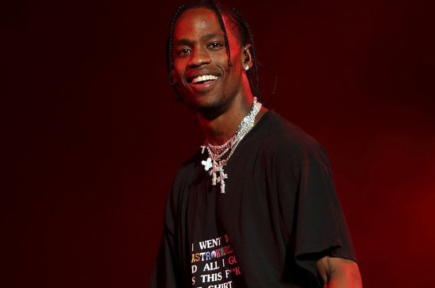

Curriculo Travis Scott

Identificação
Apresentação
Formação Acadêmica
Experiência
Conhecimentos
Identificação
- Nome: Travis Scott
- Endereço: Houston, Texas
- Telefone: 997860023
- Email: traviscott@gmail.com
Apresentação
Travis Scott (por vezes estilizado como Travi$ Scott), é um rapper americano, compositor e produtor musical. Em 2012, Scott assinou seu primeiro grande contrato com a gravadora Epic Records. Em novembro do mesmo ano, Scott assinou um contrato com a GOOD Music, gravadora de Kanye West, como parte da sua produção no álbum colaborativo Cruel Summer. Em abril de 2013, Travis Scott assinou um contrato com a Grand Hustle Records, do rapper T. I.
O primeiro projeto completo de estreia de Scott foi uma mixtape intitulada Owl Pharaoh, lançada em 2013. Em seguida, lançou sua segunda mixtape, Days Before Rodeo, em agosto de 2014. Seu primeiro álbum de estúdio, Rodeo, foi lançado somente em setembro de 2015 e o hit "Antidote" alcançou as paradas de sucesso nos Estados Unidos, figurando no top 20 da Billboard Hot 100. Seu segundo álbum, Birds in the Trap Sing MicKinght, foi lançado em setembro de 2016, gerando críticas positivas. Em 2017, Travis Scott lançou um álbum em colaboração com Quavo intitulado Huncho Jack, Jack Huncho, assinado por ambos com o nome do novo dueto, Huncho Jack. Ele lançou seu terceiro álbum, Astroworld, em 3 de agosto de 2018.
Formação Acadêmica
- Aos 17 anos, Travis iniciou sua carreira como produtor musical, com foco na produção de hip-hop.
- Posteriormente, ele entrou em sua primeira parceria com Chris Holloway, seu amigo de longa data, formando a dupla The Graduates ("Os Graduados", em tradução livre). Em 2008, a dupla lançou o seu primeiro EP sem título na rede social Myspace.
- No ano seguinte, Travis e OG Chess, um dos seus colegas de escola, formou o grupo The Classmates ("Os Colegas", em tradução livre). The Classmates lançou dois projetos: Buddy Rich, em 2009, e Cruis'n USA em 2010. Travis lidou principalmente com o trabalho de produção em ambos os projetos. A dupla permaneceu unida até o final de 2012.
- Depois de sair da faculdade, ele se mudou de Houston, Texas para Washington, Nova York, onde começou a trabalhar com o amigo Mike Waxx, dono do site de música Illroots.
Experiência
- 2008-12: Início da Carreira e ofertas de gravações
- Aos 17 anos, Travis iniciou sua carreira como produtor musical, com foco na produção de hip-hop
- 2012-14: Owl Pharaoh, e Days Before Rodeo
- Em 13 de março de 2014, Travis gravou uma nova canção, que deveria ser incluída em sua segunda mixtape, intitulada Days Before Rodeo.
- 2015-16: Rodeo e Birds in the Trap Sing McKnight
- Em 4 de janeiro de 2016, Travis anunciou que ele teria um novo álbum de estúdio a caminho. Em 8 de fevereiro de 2016, foi anunciado que os rappers iLoveMakonnen e Vic Mensa estariam com Travis Scott na campanha "WANGSQUAD" do estilista Alexander Wang.
- 2017: Huncho Jack, Jack Huncho
- Em 3 de abril de 2017, foi relatado que Scott estava trabalhando em um álbum colaborativo com o rapper Quavo, potencialmente a ser lançado mais tarde, em 2017.
- 2018–presente: Astroworld
- Astroworld foi lançado em 3 de agosto de 2018 e foi aclamado pela crítica,[52][53] estreando em primeiro lugar na Billboard 200.[54] Em 20 de agosto de 2018, Travis Scott anunciou a turnê "Astroworld: Wish You Were Here Tour", a iniciar em 8 de novembro de 2018 em Baltimore, Maryland, e a terminar em 19 de dezembro de 2018 em Los Angeles, Califórnia.
Conhecimentos
| Assunto |
Grau de Conhecimento |
| Produção Musical |
Avançado |
| Conhecimento Musical |
Avançado |